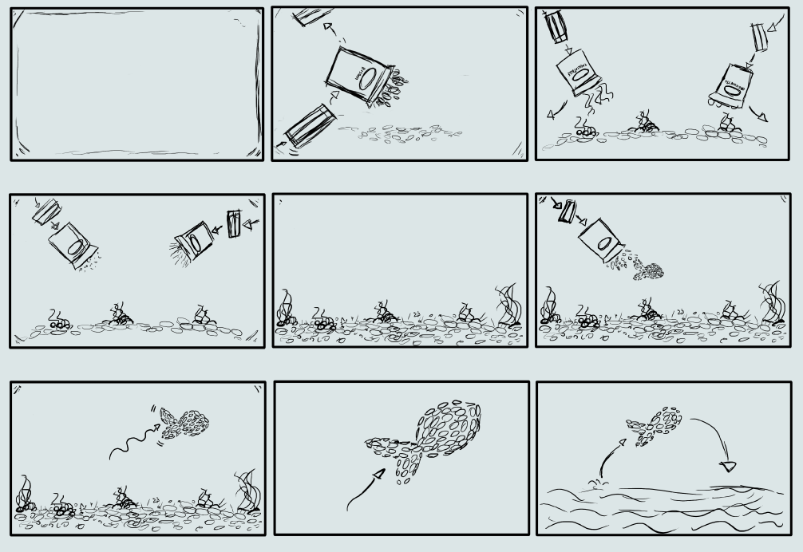
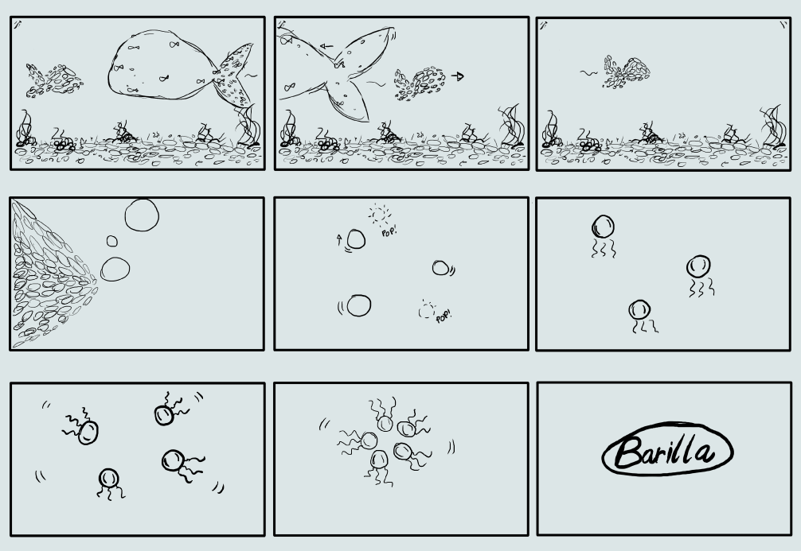

Tv ad for Barilla
|   |
Stop-motion video Il video, progettato e prodotto in collaborazione con colleghi universitari, è stato una proposta per un concorso di uno spot pubblicitario Barilla.
Layout e scelte comuncative Si rispetta in questo video, il colore aziendale della Barilla, che ormai fa parte dell'immaginario collettivo. |